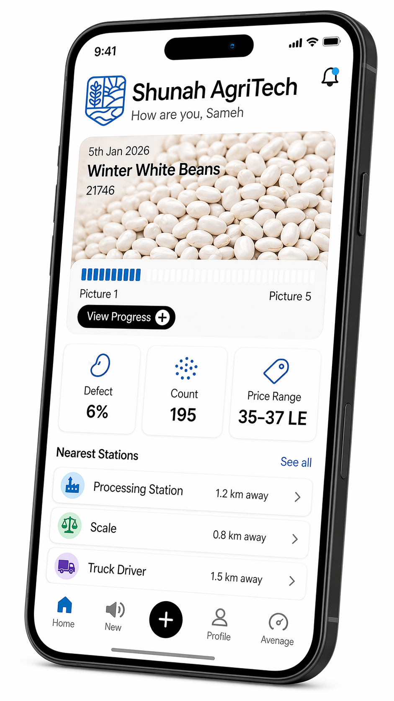

Social Infrastructure IOT
IoT connects every touchpoint—farms, assets, and logistics—making us the intelligence layer that processes and directs flow in real time. Every interaction becomes a signal that drives smarter movement, tighter control, and consistent execution.

Increase
Utilization
Optimize
Flow
Orchestrate Supply
OVERVIEW
Infrastructure IOT
More usage means more control — tighter linkage, smarter flow. As transactions move through the system, the IoT layer doesn’t just connect infrastructure, it starts to orchestrate it.
Processing Stations
Establish a high-performance vision model trained on structured crop data.
Increase Utilization
Maximize usage of trucks, stations, and assets across the network
Optimize Flow
Route crops, logistics, and processing in real-time for speed and efficiency
Orchestrate Supply
Coordinate farmers, buyers, and infrastructure into one synchronized system
OVERVIEW
Social Infrastructure IOT
By analyzing close-range photos of physical samples, the system detects defects, evaluates condition, and standardizes grading — enabling fast, consistent, and objective quality assessment at scale.
In-Depth
Step 1 / 6Processing Stations
Establish a high-performance vision model trained on structured crop data.